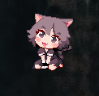
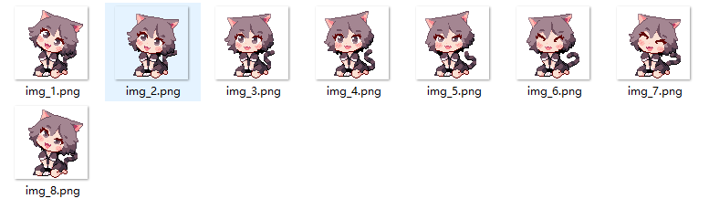
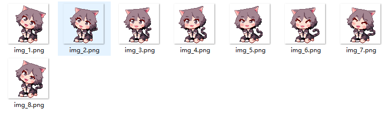
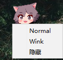
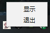

Qt桌宠项目
你可以点击以下链接查看与下载相关资源：
项目源码可在GitHub仓库查看与下载：项目地址（github）
简介
这是基于C++语言使用Qt框架开发的桌宠应用，通过图形化界面实现用户与虚拟宠物的多种互动功能，适合Qt入门学习。
项目包含界面设计、宠物状态管理、交互逻辑等核心模块，通过该项目可学习Qt界面开发流程、信号与槽机制及C++面向对象编程的实际应用。
由于图片素材为本人绘制，数量不足所以只提供两种动作切换，桌宠会根据不同状态播放不同动画。
项目相关截图：
桌宠运行图片
 

桌宠动画素材
 动作切换与菜单
技术栈与特点
开发语言与技术栈：
- C++ 100.0% —— 项目全部使用C++编写，运用面向对象思想设计宠物类、交互逻辑类等，通过类的封装使状态管理和交互逻辑更清晰，提升代码可维护性。
- UI框架：Qt框架，使用Qt Widgets组件搭建界面，结合Qt Designer进行可视化布局设计。
- 资源管理：Qt资源系统，通过.qrc文件管理宠物图片、图标等资源，便于项目资源的统一维护。
- 状态逻辑：通过类成员变量存储宠物状态数据，使用成员函数处理状态更新，确保状态操作的规范性。
- 事件处理：基于Qt事件模型，响应用户操作事件，实现界面与用户的实时交互。
项目特点：
- 采用可视化与代码结合的方式开发界面，兼顾开发效率与定制灵活性
- 通过信号与槽实现低耦合设计，界面与逻辑分离，便于后续功能扩展
- 包含完整的状态管理体系，宠物状态随交互动态变化，模拟真实养宠体验
- 代码结构清晰，注释完善，适合Qt初学者了解界面开发与交互逻辑实现流程